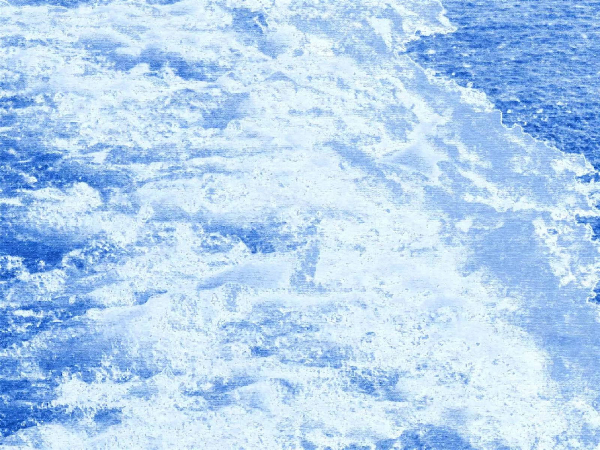
SAUDADE is a photoroman — a personal reflection on nostalgia and the wear of time. The title comes from the Portuguese word “saudade”: a deep, melancholic longing for something or someone that is missing, a bittersweet sense of absence and remembrance. Through photographs and short stop-motion sequences I record my village, the place where I spent the summers of my childhood, looking in the images for the way the faces, habits and moments that once defined my world have changed.
How it was made. Every photograph is my own, edited in Photoshop into the film’s single blue. I wrote the poem, recorded it in my own voice and built the sound myself in Audacity and Reaper, then cut everything together in Premiere Pro.
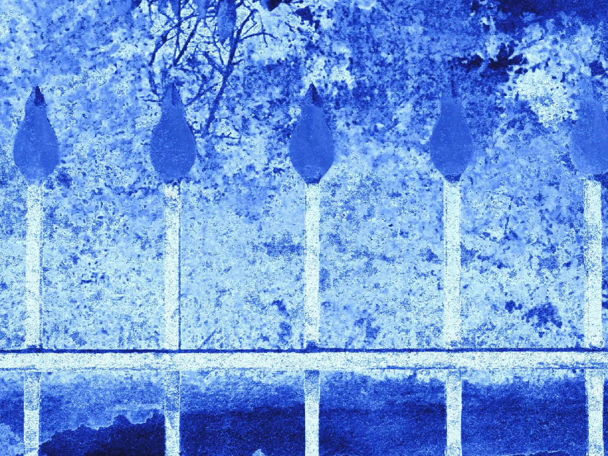
the film — 1′23″
the poem
The poem runs under the images as an inner narration — a confession about everything I will not live again.
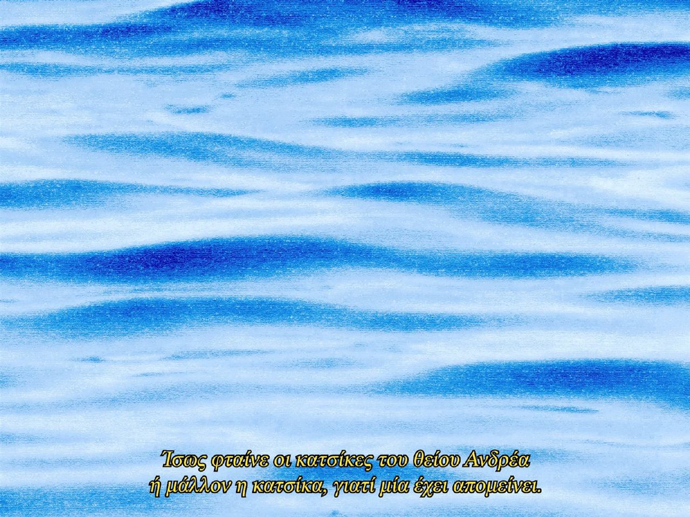
Το καλοκαίρι δεν είναι το ίδιο.
Ίσως φταίνε οι κατσίκες του θείου Ανδρέα
ή μάλλον η κατσίκα, γιατί μία έχει απομείνει.
Τώρα το κάνει πιο πολύ για το κέφι του,
κι ίσως για να ’χει παρέα τα μεσημέρια.
Summer isn’t the same.
Maybe it’s uncle Andreas’s goats —
or rather the goat, since only one is left.
He keeps her mostly for the joy of it now,
and maybe for company in the afternoons.
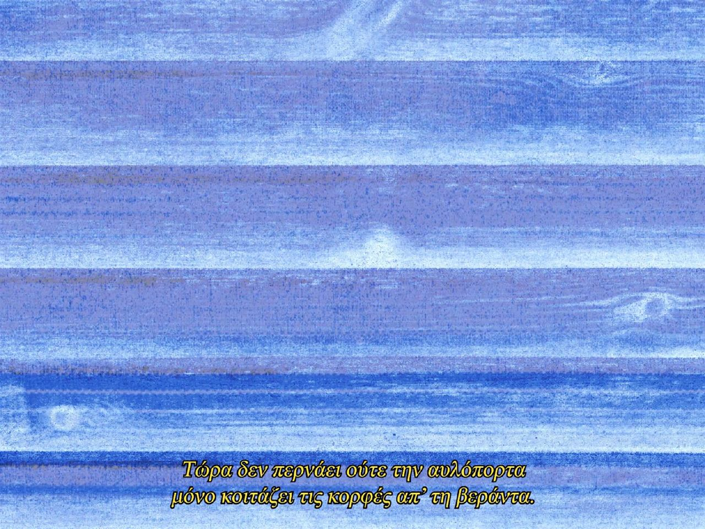
Ίσως γιατί ο παππούς δεν μας πάει πια στο βουνό.
Τώρα δεν περνάει ούτε την αυλόπορτα
μόνο κοιτάζει τις κορφές απ’ τη βεράντα.
Maybe because grandpa no longer takes us up the mountain.
Now he doesn’t even pass the garden gate,
he only watches the peaks from the veranda.
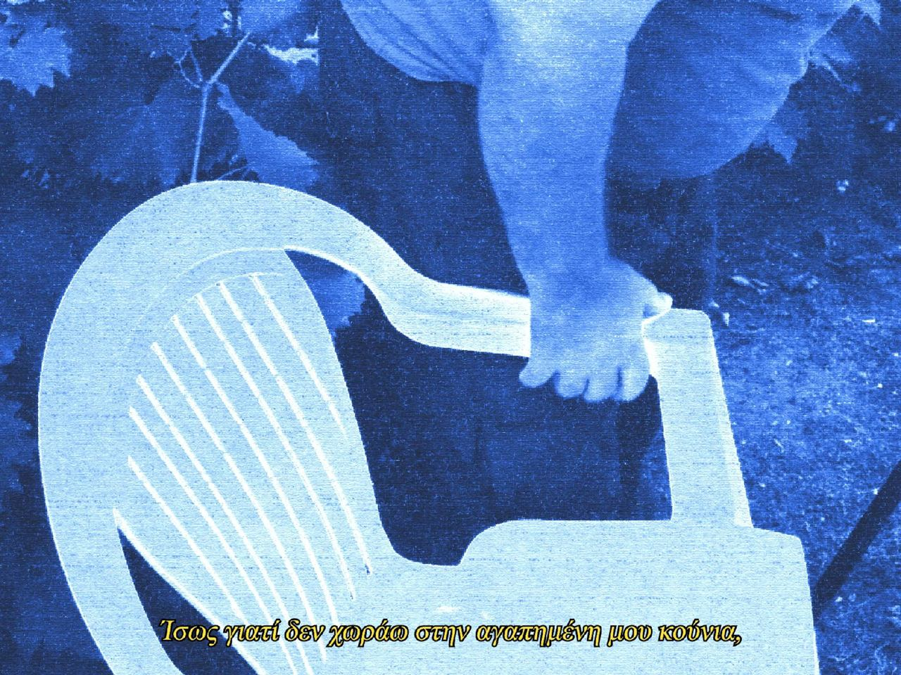
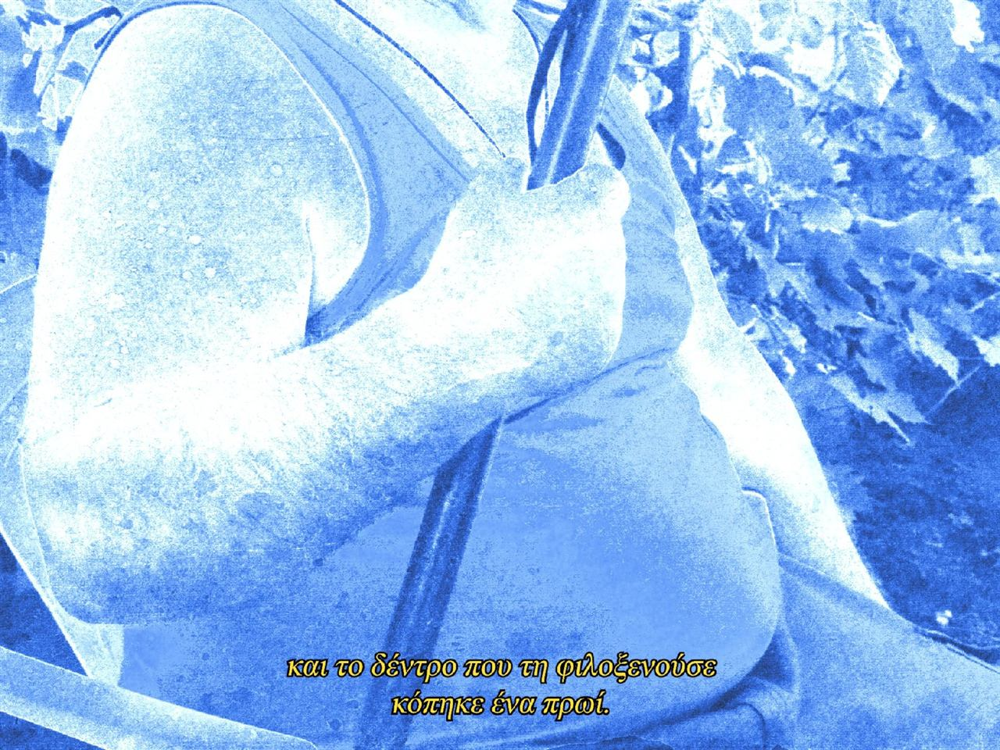
Το καλοκαίρι δεν είναι το ίδιο.
Ίσως γιατί δεν χωράω στην αγαπημένη μου κούνια,
και το δέντρο που τη φιλοξενούσε
κόπηκε ένα πρωί.
Η γκλίτσα του παππού δεν διώχνει πια φίδια και σαύρες
μα τη χρησιμοποιεί για στήριγμα, μην πέσει.
Summer isn’t the same.
Maybe because I no longer fit in my favourite swing,
and the tree that held it
was cut down one morning.
Grandpa’s crook no longer chases off snakes and lizards —
he leans on it now, so he won’t fall.
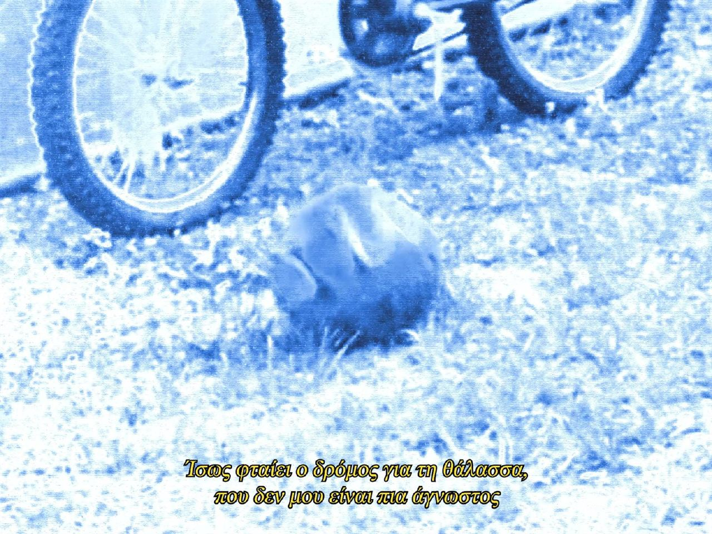
Το καλοκαίρι δεν είναι το ίδιο.
Ίσως φταίει ο δρόμος για τη θάλασσα,
που δεν μου είναι πια άγνωστος.
Summer isn’t the same.
Maybe it’s the road to the sea,
no longer unknown to me.
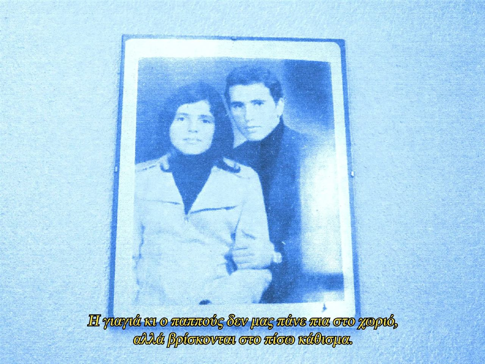
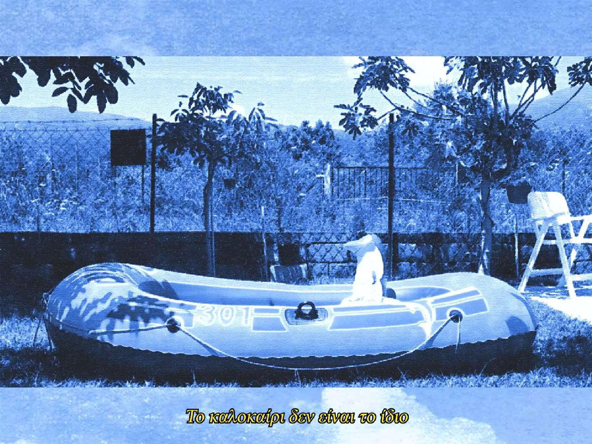
Το καλοκαίρι δεν είναι το ίδιο.
Η γιαγιά κι ο παππούς δεν μας πάνε πια στο χωριό,
αλλά βρίσκονται στο πίσω κάθισμα.
Summer isn’t the same.
Grandma and grandpa no longer drive us to the village;
they sit in the back seat now.
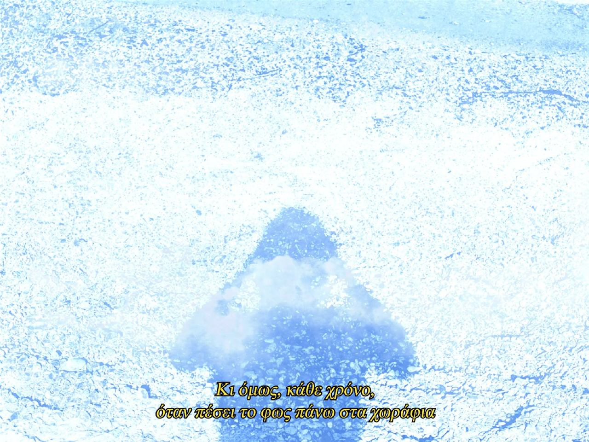
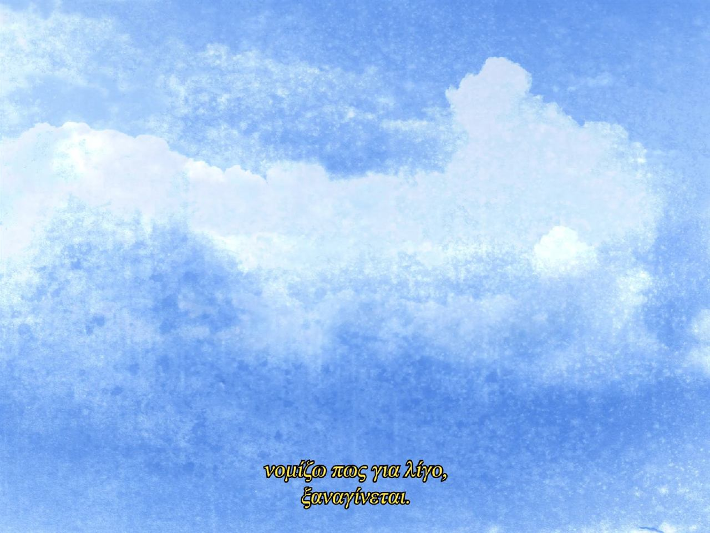
Το καλοκαίρι δεν είναι το ίδιο.
Κι όμως, κάθε χρόνο,
όταν πέσει το φως πάνω στα χωράφια,
νομίζω πως για λίγο
ξαναγίνεται.
Summer isn’t the same.
And yet, every year,
when the light falls on the fields,
I think that, for a moment,
it is again.